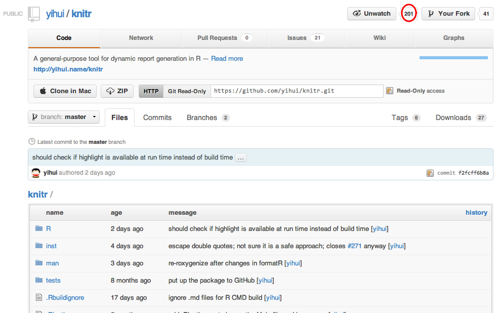
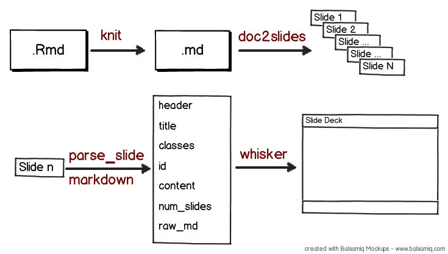

Slidify

Reproducible HTML5 Slides Made Easy
by Ramnath Vaidyanathan
Reproducible HTML5 Slides Made Easy
by Ramnath Vaidyanathan
Slidify is a tool that makes it easy to create, customize and publish, reproducible HTML5 slide decks using R Markdown.
Slidify can be installed from github using devtools
install.packages('devtools')
require(devtools)
install_github('slidify', 'ramnathv')
You also need to install dependencies from github
install_github('knitr', 'yihui')
install_github('whisker', 'edwindj')
install_github('markdown', 'rstudio')
Slidify is a tool that makes it easy to create, customize and publish, reproducible HTML5 slide decks using R Markdown.
Write in R Markdown, separating slides by a horizontal rule ---.
---
# My First Slidify Deck
by Ramnath Vaidyanathan
---
### Slide 1
This is an unordered list
- Point 1
- Point 2
- Point 3
- Point 4
---
by Ramnath Vaidyanathan
This is an unordered list
Add slide classes and id by appending them to the slide separator
--- fill #montreal
### Montreal by Night Time

--- middle
Slidify is Awesome
Slidify is Awesome!
Slidify is a tool that makes it easy to create, customize and publish, reproducible HTML5 slide decks using R Markdown.
slidify is designed to be modular and provide a high degree of customization for the more advanced users.
| Option | Description |
|---|---|
| framework | slide generation framework to use |
| theme | theme to use for styling slide content |
| highlighter | tool to use for syntax highlighting |
| histyle | style to use for syntax highlighting |
| copy_libraries | copy library files to slide directory? |
| lib_path | path to libraries |
| mathjax | use mathjax ? |
| embed | embed local images ? |
Use the options framework and theme to style your deck!
| framework | theme |
|---|---|
| html5slides | layout-default template-default |
| html5rocks | |
| deck.js | web2.0, swiss, neon |
| dzslides | |
| landslide | default, tango, clean |
| shower | ribbon |
| slidy | |
| slideous | |
| beamer |
Use the options highlighter and histyle to control syntax highlighting
| highlighter | histyle |
|---|---|
| highlight | see knit_theme$get() |
| highlight.js | see http://goo.gl/uEJj |
| google_prettify | see http://goo.gl/yUikj |
Slidify is a tool that makes it easy to create, customize and publish, reproducible HTML5 slide decks from R Markdown.
Publish your deck on RPubs using two lines of code
slidify('slides.Rmd', options = list(embed = TRUE))
markdown::rpubsUpload('My First Presentation', 'slides.html')
Development is underway to provide support for publishing to
Slidify is a tool that makes it easy to create, customize publish, reproducible HTML5 slide decks from R Markdown.
---
### A Simple Plot
Let us create a simple scatterplot.
```{r simple-plot, fig.height = 6, fig.align = 'center', message = F}
require(ggplot2)
qplot(wt, mpg, data = mtcars)
```
---
### A Table
```{r table, results = 'asis', comment = NA}
library(xtable)
options(xtable.type = 'html')
xtable(head(mtcars))
```
Let us create a simple scatterplot.
require(ggplot2)
qplot(wt, mpg, data = mtcars)
library(xtable)
options(xtable.type = "html")
xtable(head(mtcars))
| mpg | cyl | disp | hp | drat | wt | qsec | vs | am | gear | carb | |
|---|---|---|---|---|---|---|---|---|---|---|---|
| Mazda RX4 | 21.00 | 6.00 | 160.00 | 110.00 | 3.90 | 2.62 | 16.46 | 0.00 | 1.00 | 4.00 | 4.00 |
| Mazda RX4 Wag | 21.00 | 6.00 | 160.00 | 110.00 | 3.90 | 2.88 | 17.02 | 0.00 | 1.00 | 4.00 | 4.00 |
| Datsun 710 | 22.80 | 4.00 | 108.00 | 93.00 | 3.85 | 2.32 | 18.61 | 1.00 | 1.00 | 4.00 | 1.00 |
| Hornet 4 Drive | 21.40 | 6.00 | 258.00 | 110.00 | 3.08 | 3.21 | 19.44 | 1.00 | 0.00 | 3.00 | 1.00 |
| Hornet Sportabout | 18.70 | 8.00 | 360.00 | 175.00 | 3.15 | 3.44 | 17.02 | 0.00 | 0.00 | 3.00 | 2.00 |
| Valiant | 18.10 | 6.00 | 225.00 | 105.00 | 2.76 | 3.46 | 20.22 | 1.00 | 0.00 | 3.00 | 1.00 |

Full Disclosure: I am an active contributor to `knitr`. So the views expressed here on how awesome knitr is might be biased.
Currently supports most of the popular markups including
Here is a code chunk with python code.
x = 'hello, python world!'
print x
print x.split(' ')
hello, python world!
['hello,', 'python', 'world!']
Here is a code chunk with ruby code
x = 'hello, ruby world'
p x.split(' ')
["hello,", "ruby", "world"]
Complete control over how plots are generated, captured, displayed and saved.
| Option | Values | Description |
|---|---|---|
fig.keep |
'high', 'all', 'none', 'first', 'last' | what plots to keep |
fig.show |
'asis', 'hold', 'animate' | how to display multiple plots |
fig.width |
7 | width in inches |
fig.height |
7 | height in inches |
fig.align |
'default', 'center', 'left', 'right' | how to align plots |
fig.path |
'figure/' | path prefix to use |
dev |
'pdf', 'png', ... | plotting device to use |
| Option | Values | Description |
|---|---|---|
highlight |
TRUE, FALSE | highlight source code ? |
tidy |
TRUE, FALSE | tidy source using formatR ? |
prompt |
TRUE, FALSE | display prompt ? |
continue |
TRUE, FALSE | display continuation ? |
echo |
TRUE, FALSE, 3:7 | display source? what lines ? |

Slidify makes it easy to create, customize and publish, reproducible HTML5 slide decks using R Markdown.


smartypantsRaw Latex
$$
\begin{aligned}
\dot{x} & = \sigma(y - x) \\
\dot{y} & = \rho x - y - xz \\
\dot{z} & = -\beta z + xy
\end{aligned}
$$
Rendered Equation
\[ \begin{aligned} \dot{x} & = \sigma(y - x) \\ \dot{y} & = \rho x - y - xz \\ \dot{z} & = -\beta z + xy \end{aligned} \]

--- plot #simple-plot
### A Simple Plot ###
Let us create a simple scatterplot.
```{r simple-plot, fig.height = 6, fig.align = 'center', message = F}
require(ggplot2)
qplot(wt, mpg, data = mtcars)
```
--- plot #simple-plot
### A Simple Plot ###
Let us create a simple scatterplot.
require(ggplot2)
qplot(wt, mpg, data = mtcars)
<div class="rimage center">
<img src="figure/simple-plot.png" class="plot" />
</div>
$header
[1] "<h3>A Simple Plot</h3>"
$level
[1] "3"
$title
[1] "A Simple Plot"
$content
[1] "\n\n<p>Let us create a simple scatterplot.</p>\n\n<pre><code>require(ggplot2)\nqplot(wt, mpg, data = mtcars)\n</code></pre>\n\n<p></div><div class=\"rimage center\"><img src=\"figure/simple-plot.png\" class=\"plot\" /></div><div class=\"rcode\"></p>\n"
$sub
[1] TRUE
$id
[1] "slide-20"
$num
[1] 20
$classes
[1] ""
$raw
[1] " \n### A Simple Plot ###\n\nLet us create a simple scatterplot.\n \n```{r simple-plot, fig.height = 6, fig.align = 'center', message = F}\nrequire(ggplot2)\nqplot(wt, mpg, data = mtcars)\n```\n"
<html>
<head>
<!-- META DATA -->
<!-- SYSTEM STYLE SHEETS -->
</head>
<body style='display: none'>
<section class='slides {{ theme }}'>
{{#slides}}
<article class = "{{ classes }}" id = "{{id}}">
{{{ header }}}
{{{ content }}}
</article>
{{/slides}}
</section>
</body>
<!-- SYSTEM JAVASCRIPTS -->
<!-- SYSTEM PARTIALS -->
</html>
{{#mathjax}}
<!-- LOAD MATHJAX JS -->
<script type="text/x-mathjax-config">
MathJax.Hub.Config({
tex2jax: {
inlineMath: [['$','$'], ['\\(','\\)']],
processEscapes: true
}
});
</script>
<script type="text/javascript"
src="https://c328740.ssl.cf1.rackcdn.com/mathjax/2.0-latest/MathJax.js?config=TeX-AMS-MML_HTMLorMML">
</script>
<!-- DONE LOADING MATHJAX -->
{{/mathjax}}
All the heavy lifting is actually done by three awesome R packages. slidify is merely a wrapper around them.
slidify builds on HTML5 slide frameworks created by several individuals and organizations. I would like to acknowledge their work and efforts.
| Framework | Author | License |
|---|---|---|
| HTML5Slides | Luke Mah, Marcin Wichary | Apache |
| deck.js | Caleb Troughton | MIT/GPL |
| dzslides | Paul Roget | DWTFYW |
| html5rocks | Apache | |
| Landslide | Adam Zapletal | Apache |
| Shower | Vadim Makeev | MIT |
| slidy | Dave Ragett | MIT |
| slideous | Stefan Goessner | LGPL |
Syntax highlighting is powered by open source highlighters. I would like to than the authors of these tools.
| Highighter | Author | License |
|---|---|---|
| highlight.js | Software Maniacs | MIT |
| Google Prettify | Apache | |
| highlight | Romain Francois | GPL |
I have extensively borrowed ideas and features from HTML5 slide converters written in other languages. I would like to acknowledge contributions of these authors.
| Language | Framework |
|---|---|
| Ruby | showoff |
| Ruby | slideshow |
| Ruby | keydown |
| Python | hieroglyph |
| Python | landslide |
| Haskell | pandoc |
slidify is made available under the MIT License. All included css and javascript are licensed under the terms specified by the respective libraries.
MIT License
Copyright (C) 2012 Ramnath Vaidyanathan
Permission is hereby granted, free of charge, to any person obtaining a copy of this software and associated documentation files (the "Software"), to deal in the Software without restriction, including without limitation the rights to use, copy, modify, merge, publish, distribute, sublicense, and/or sell copies of the Software, and to permit persons to whom the Software is furnished to do so, subject to the following conditions:
The above copyright notice and this permission notice shall be included in all copies or substantial portions of the Software.
THE SOFTWARE IS PROVIDED "AS IS", WITHOUT WARRANTY OF ANY KIND, EXPRESS OR IMPLIED, INCLUDING BUT NOT LIMITED TO THE WARRANTIES OF MERCHANTABILITY, FITNESS FOR A PARTICULAR PURPOSE AND NONINFRINGEMENT. IN NO EVENT SHALL THE AUTHORS OR COPYRIGHT HOLDERS BE LIABLE FOR ANY CLAIM, DAMAGES OR OTHER LIABILITY, WHETHER IN AN ACTION OF CONTRACT, TORT OR OTHERWISE, ARISING FROM, OUT OF OR IN CONNECTION WITH THE SOFTWARE OR THE USE OR OTHER DEALINGS IN THE SOFTWARE